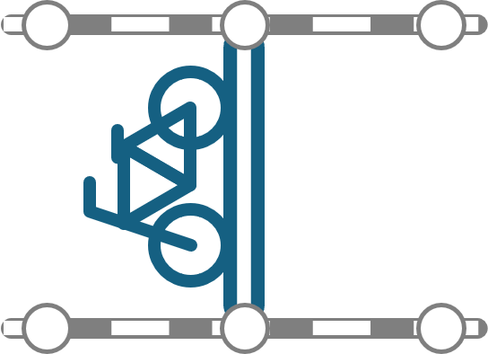
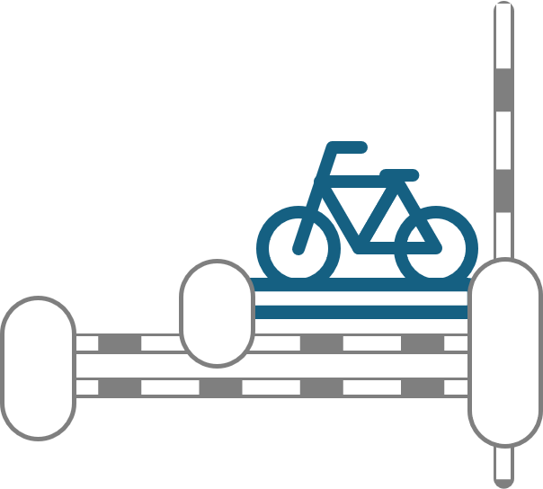
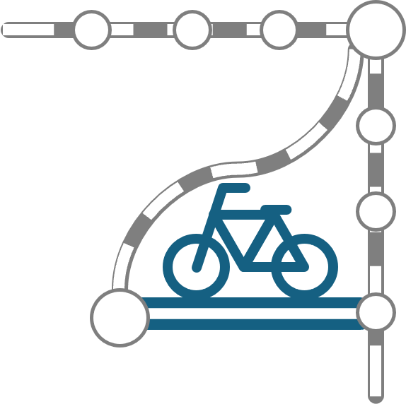
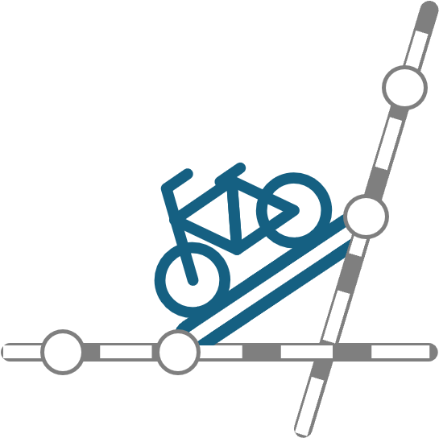

おもしろ事例集
自転車を組み合わせることによる時間短縮効果が大きい出発駅・到達駅・経由駅のパターンを調べました。以下の条件に当てはまる駅は「急がば漕げ駅」かもしれません。これらの条件に着目して到達時間マップを操作してみてください。また、これ以外の「急がば漕げ駅」の条件も探ってみてください。
並行する2路線
並走している隣の路線へ乗り換えるためには一度ターミナル駅に出るか環状線を利用するのが一般的ですが、隣の路線に直接自転車で向かうと早く到着できることがあります。

事例
- JR中央線（吉祥寺・三鷹等）ー西武新宿線（上石神井・武蔵関等）
- 東京メトロ東西線（葛西・浦安・南行徳・行徳等）ー都営新宿線（船堀・一之江・瑞江等）
利便性の高い駅に近い小駅
利便性の高い駅（乗り入れ路線が多いターミナル駅、優等列車が停車する駅等）に近い小駅へは、普通列車を待っている間にターミナル駅から自転車で向かってしまうほうが速い場合があります。特に、都心のターミナル駅付近はシェアサイクルポートが充実しており、駅間距離も短いため、気軽に自転車移動が可能です。

事例
- 椎名町（西武池袋線）：池袋に近接
- 初台（京王新線）：新宿に近接
- 不動前（東急目黒線）：目黒に近接
- 北品川（京急本線）：品川に近接
- 西立川（JR青梅線）：立川に近接
盲腸線
運行区間が短く、他の路線と接続していない「盲腸線」の駅から、盲腸線が直接接続していない路線に向かう場合、出発駅から自転車で別の路線の駅まで行ったほうが速い場合があります。

事例
- 東京メトロ丸ノ内線分岐線（方南町など）
- 鶴見線（弁天島など）
- 南武支線（小田栄など）
- 東急こどもの国線（こどもの国など）
- 西武西武園線（西武園）
- 西武狭山線（下山口）
- 日暮里・舎人ライナー（見沼代親水公園など）
乗換駅のない交差する2路線
交差する2つの路線があるのに、乗換駅がない場合、鉄道だけで移動するのは難しいかもしれません。でも、近くの駅を自転車で移動することで、2つの路線を乗り換えることができる場合があります。

事例
- 小平（西武新宿線）ー新小平（JR武蔵野線）
- 移動例：田無ー（西武新宿線）ー小平ー（自転車）ー新小平ー（武蔵野線）ー府中本町
- 白山（都営三田線）ー日暮里（京成本線）
- 移動例：高島平ー（都営三田線）ー白山ー（自転車）ー日暮里ー（京成本線）ー京成高砂
その他（複合パターン）
多数の駅・路線が密集しているエリアでは、以上の複合パターンとなる場合があります。ただし、都心などあまりにも密集しすぎているとサイクルポートを探している間に歩いてしまったほうが早いケースも多いです。
事例
- 東京駅周辺
- 並行する2路線：東京メトロ千代田線ー都営浅草線
- 利便性の高い駅に近い小駅：東京ー桜田門（東京メトロ有楽町線）
- 大田区
- 並行する2路線：東急田園都市線（田園調布など）ー東急池上線（雪が谷大塚など）
- 利便性の高い駅に近い小駅：糀谷（京急空港線）：蒲田（JR京浜東北線）に近接
- 盲腸線：都営浅草線（西馬込）
- 乗換駅のない交差する2路線：西大井（JR横須賀線）ー戸越（都営浅草線）